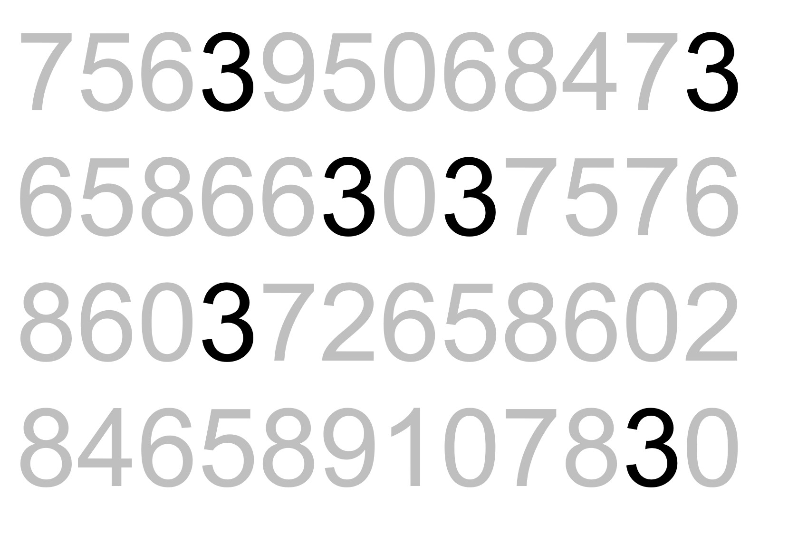
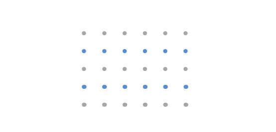
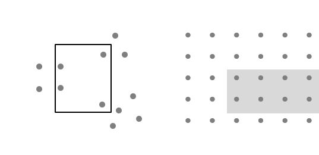
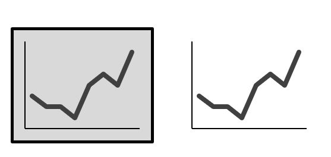
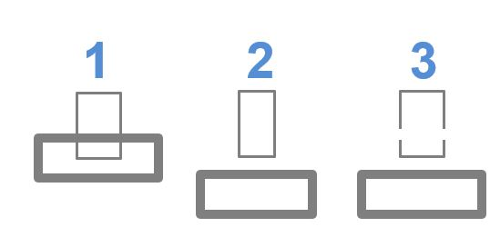
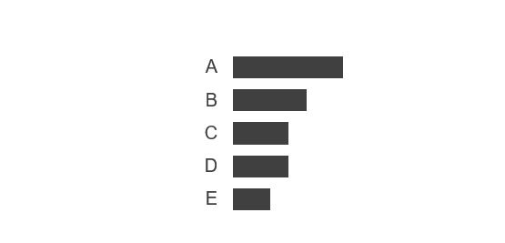

Code
2 + 2[1] 4Viz Tool
The plots in Abbildung 1 show the relationship between city and highway mileage for 38 popular models of cars. (Abendroth und Diewald 2019)
Das ist ein spannendes Tool für meine Arbeit
In Abbildung 1 (a) the points are colored by the number of cylinders while in Abbildung 1 (b) the points are colored by engine displacement. (Bannert 2022)
ggplot(mpg, aes(x = hwy, y = cty, color = cyl)) +
geom_point(alpha = 0.5, size = 2) +
scale_color_viridis_c() +
theme_minimal()
ggplot(mpg, aes(x = hwy, y = cty, color = displ)) +
geom_point(alpha = 0.5, size = 2) +
scale_color_viridis_c(option = "E") +
theme_minimal()

You can add options to executable code like this
2 + 2[1] 4[1] 4The echo: false option disables the printing of code (only output is displayed).
Wichtige Aspekte werden hier besprochen. (Nussbaumer Knaflic 2017)
####TODO: Begrifflichkeiten -> Skale, Aestetics Gestaltungselement, Visuelle eigenschaft, visuelle Elemente, Ebene
Daten zu visualisieren heisst, eine Transformation von Daten hinzu systematische und logische visuelle Elemente zu vollziehen, welche in ihrer Summe als bildliche Einheit interpretiert wird. Im Kern ordnet der Transformationsprozess der Datenvisualisierung den Daten ein quantifizierbares Merkmal hinzu. Das kann eine Grösse, eine Farbe, oder eine Position sein. In der Datenvisualisierungen stehen 4 grundlegende Aesthetics (Gestaltungselemente) für die Darstellung von Daten als Grafiken zur Verfügung. (Wilke 2020, 7)
| Position | Grösse | Farbe | Form |
|---|---|---|---|
 |
 |
 |
Die Aesthetics Linientyp, Linienbreite und Transparenz können als spezial Elemente von Form, Grösse und Farbe interpretiert werden.
Aesthetics werden in 2 Skalen unterteilt: solche die kontinuierliche Daten darstellen können und solche, die das nicht können. (Wilke 2020, 8–9) Unter kontinuierliche Daten werden alle Skalenniveaus, für die eine beliebige Anzahl an an Zwischenausprägungen besteht, gefasst. Wie beispielsweise eine Zeitdauer. Umgekehrt haben diskrete Daten eine begrenzte Anzahl an Ausprägungen die nicht weiter abgestuft werden kann. Es ist beispielsweise nicht möglich, dass eine Familie 1.7 Kinder hat. Das Skalenniveau definiert die Art der Ausprägung (Werte) der gemessenen Dimensionen (Merkmale) die in einer Variable erfasst wird. Bei quantitativen Forschungsmethoden werden die Skalen sehr genau definiert, da das Skalenniveau die rechnerischen Operationen und die Vergleichsmöglichkeiten definiert. (Diaz-Bone 2006, Kap. 2.1 und 2.2). Für die Anwendung der Aesthetics ist die Unterscheidung zwischen kontinuierlichen und diskreten Skalen entscheidende.
abfall_zh <-
read_csv(here::here("data", "KTZH_00001803_00003460.csv")) |>
select(!c("Gemeinde_Nr", "Einheit")) |>
rename("Menge in Tonnen" = Wert)
abfall_zh_sample <-
abfall_zh|>
filter(row_number() %% 214 == 1)
abfall_zh_sample |>
head(4) |>
knitr::kable()| Jahr | Gemeinde | Abfallart | Menge in Tonnen |
|---|---|---|---|
| 2021 | Aeugst a.A. | Brennbare Abfälle und Sperrgut | 323 |
| 2021 | Affoltern a.A. | Brennbare Abfälle und Sperrgut | 2188 |
| 2021 | Bonstetten | Brennbare Abfälle und Sperrgut | 871 |
| 2021 | Hausen a.A. | Brennbare Abfälle und Sperrgut | 603 |
Die Spalte Jahr ist ein diskreter numerischer Wert. Im Gegensatz dazu wäre 01.01.2021 ein kontinuierlicher Datumswert. Gemeinde und Abfallart sind beides kategorische (Faktor) Werte ohne logische Reihenfolge. Im Gegensatz dazu besitzen die Kategorien “hässlich”, “schön”, “wunderschön” eine logischen Reihenfolge. Menge in Tonnen ist ein kontinuierlicher numerischer Wert. Neben ganzen Zahlen gehören auch rationale oder reelle Zahlen in diese Kategorie.
Für die Abbildung der Daten auf Aesthetics wird angegeben, welche Datenwerte welchem Wert auf der Datenskala entspricht. Das bedeutet, mithilfe der Skala erfolgt die eindeutige Zuordnung von Daten und Aesthetics. Bei einem Diagramm mit einer x-Achse wird angegeben welcher Wert auf welche Position auf dieser Achse dargestellt wird. Der gleichen Logik folgend, geben wir an welche Grösse, Farbe oder Form ein Datenwert einnehmen soll. Anstatt auf einer Positionsskala werden die einfach Grössen-, Farben- oder Formskala verwendet. Ein Datenwert entspricht in jeder Skala einem eindeutigen Skalawert bzw. Aestetic. Je Datenwert darf es nur ein Skalawert geben und umgekehrt. Eine eins zu eins Beziehung ist notwendig, damit die Datenvisualisierung nicht mehrdeutig wird. (Vgl. Kapitel 2.6.2)

Wenden wir diese Erkenntnise beim Datensatz zum Abfall im Kanton Zürich an, dann erhalten wird folgendes Ergebnis: Auf der x-Achse werden die Gemeinden anhand der Positionsskala platziert. Die Variable hat keine logische Reihenfolge. Für die Unterstützung des lesens des Diagramms, sind die Gemeinden anhand der Menge an Abfall sortiert. Auf der Positionsskala y-Achse ist die Menge in Tonnen übertragen. Zusätzlich wurden die Gemeinden auf die Farben übertragen. Vor dem Hintergrund des Data Storytelling lässt sich die Frage stellen, ob die Verwendung des Aesthetic Farbe sinnvoll ist.
(vgl. KAPITEL)
Bei diesem Beispiel steht jedoch die Beziehung zwischen den Datenwerte und Aesthetics durch Skalen im Zentrum. Daher wurde für jede Gemeinde eine eigene Farbe verwendet.
abfall_zh_sample |>
filter(
Gemeinde %in% c("Aeugst a.A.",
"Affoltern a.A.",
"Bonstetten",
"Hausen a.A."),
Abfallart == "Brennbare Abfälle und Sperrgut"
) |>
plot_amounts_grouped(
x = fct_reorder(Gemeinde, `Menge in Tonnen`),
y = `Menge in Tonnen`,
group = Gemeinde) +
# nicht notwendig, macht den plot aber etwas hübscher
labs(x = "Gemeinde") +
theme(legend.position = "none")Bei Beispiel (Abbildung 3) entspricht die Positionsskala einem kartesischen 2D-Koordinatensystem. Jeder Ort ist durch einen x- und y-Wert eindeutig markiert. Da die Achsen positive als auch negative Zahlen darstellen, muss der Zahlenbereich für jede Achse definiert werden. Bei diesem Beispiel verläuft die y-Achse von 0 bis 2297.4 (5% über dem höchsten y-Wert, welcher bei diesem Beispiel 2188 ist). Ist ein Datenwert innerhalb des definierten Zahlenbereichs, dann wird er im Diagramm an der entsprechenden Position abgebildet. Ansonsten wird der Wert verworfen und erscheint nicht im Diagramm. (Wilke 2020, 13)
temp_plot <-
ggplot2::economics |>
mutate(group = "eco") |>
filter(date > "1980-01-01" & date <= "2000-01-01") |>
plot_timeseries_line(x = date, y = unemploy, group = group) +
scale_x_date(
breaks = c(ymd("1980-01-01"), ymd("1990-01-01"), ymd("2000-01-01")),
labels = c("1980", "1990", "2000")
) +
theme_minimal_grid() +
labs(
x = "Jahr",
y = "Arbeitslose" #\n in 1000"
) #+ theme(axis.title.y = element_text(size = 12))
plot_grid(
plot_grid(
temp_plot, NULL, temp_plot,
rel_widths = c(1, 0.06, 2),
labels = c("a", "", "b"),
nrow = 1
),
NULL, temp_plot,
rel_heights = c(1.5, 0.06, 1),
labels = c("", "", "c"),
label_y = c(1, 1, 1.2),
ncol = 1
)Beim kartesischen Koordinatensystem sind die Abstände zwischen den Gitterlinien der Achsen diskrete Schritten. Entlang einer Achse sind die Gitterlinen gleichmässig verteilt und entsprechen einer Linearen Positionsskala. Dies gilt sowohl für die Dateneinheiten als auch in der Visualisierung. In allen drei Diagrammen sind die Schritte auf der y-Achse 3000 je Gitterline und auf der x-Achse 10 Jahre. Der verwendete Raum um die diskreten Schritte abzubilden können aber unterschiedlich gross sein, womit unterschiedliche Botschaften vermittelt werden können. Abbildung (a) betont die Veränderung auf der y-Achse und Abbildung (c) betont die Veränderung über die Zeit. Werden auf der x- und y-Achse die gleichen Einheiten verwendet, so sollten die Gitterabstände identische sein. So, dass der Abstand zwischen zwischen zwei Gitterlinien die gleiche Menge and Dateneinehiten beinhalten. (Wilke 2020, 14–15)
Neben linearen Achsen gibt es auch nichtlineare Skalen, welche meistens eine logarithmische Skala verwendet. Hier entspricht eine Einheit auf der Skale einer Multiplikation von einem festen Wert. (Wilke 2020, 17) Bei Datenvisualisierungen werden auch Polarkoordinatensysteme verwendet, bei denen die Position durch den Winkel und radialen Abstand zum Ursprung angegeben wird. (Wilke 2020, 22) Da bei dieser Arbeit ausser beim Donutdiagramm nur das lineare kartesische Koordinatensystem verwendet wird, stehen diese Systeme nicht im Fokus. Für eine Vertiefung der Thematik ist das Kapitel 3 aus Wilke (2020) zu Empfehlen.
Bei Datenvisualisierungen sind Farben ein wirkungsvolles Mittel um die Betrachtenden beim Lesen des Diagramm zu unterstützen und ihre Aufmerksamkeit zu lenken. Damit die Wirkung sich entfalten kann, muss die Anwendung von Farben selektiv und überlegt sein. Die Verwendung von Farbe sollte ein bewusster Entscheid mit einer strategischen Absicht sein. Welche Aspekte sollen die Aufmerksamkeit der Lesenden erhalten? Damit die Farben effektiv wirken, benötigt es einen Kontrast. Die Gitterlinien der bisherigen Grafiken sind alle in grau. Farben heben sich besser von grau als von blau ab, dadurch entsteht ein grösserer Kontrast zu den Farben die für die Lenkung der Lesenden verwendet werden. Für die grösste Wirkung der Farben müssen sie sparsam und konsistent verwenden. So wird gewährleistet, dass sie ihre präattentive Wirkung beibehalten. Ist alles unterschiedlich, dann kann auch nichts hervorstechen. (Nussbaumer Knaflic 2017, 98–99) Unter präattentive Merkmale versteht Nussbaumer Knaflic Marker, die ein vorbewusste Warnhemung von Sinnesreizen stimuliert und effizent mit dem ikonischen Gedächtnis interagiert. Das ikonische Gedächtnis ist aktiviert sobald wir etwas betrachten. Dabei nehmen wir seine Tätigkeit nicht bewusst wahr. Bereits nach Sekundenbruchteile wird das Signal ans Kurzzeitgedächtnis weitergeleitet. Hier werden die Informationen verarbeitet. Da das Kurzzeitgedächtnis nur einen begrenzte Kapazität hat, muss beim Datastorytelling die Reize für das Gehrin bewusst gesteuert werden. Die kognitive Belastung für das Publikum soll möglichst gering sein, damit sie die die vermittelten Informationen erhalten. Das Kurzzeitgedächntnsi kann in etwa vier Elemente visueller Informationen zeitgleich Verarbeiten. Indem Informationen als Zusammenhängende visuelle Elemente dargestellt werden, wird die kognitive Belastung für das Publikum reduziert und besitzt dennoch eine hohe Informationsdichte. Präattentive Merkmale helfen die Aufmerksamketi des Publikums zu steuern und eine visuelle Hirarchie in einem Diagramm zu schaffen. Neben Farben sind auch Formen, Grösse oder Positionen klassiche präattentive Merkmale. (Nussbaumer Knaflic 2017, 83–86)Beispielsweise können wir dank der präattentiven Funktion der Farbe einfacher und schneller die alle Anzahl Dreien in einem Zahlenblock zählen.


Die korrekte Verwendung von Farbpaletten und ihre Wichtigkeit für die Kommunikation mit Visualisierungen betrifft neben der Interpretation der Diagrammen auch die Berücksichtigung der Farbenblindheit. Bartram, Patra, und Stone (2017) Die wichtigsten Aufgaben von Farben ist die Unterscheidung von Datengruppen (wie beim Beispiel des Zahlenblocks), Darstellen von Datenwerten oder die Hervorhebung von Datenpunkte. Bei Abbildung 3 dient die Farbe als Unterscheidungsmerkmal der einzelnen Gemeinden. Bei der Anwendung von Farbe als Unterscheidungsmerkmal werden qualitative Farbskalen verwendet. Das heisst, die Anzahl Farben ist endlich, sie unterscheiden sich voneinander und sind gleichwertig zueinander. Folglich darf keine Farbe darf dominanter als die andere sein und der Eindruck einer Reihenfolge muss vermieden werden. (Wilke 2020, 25–26) Die Okabe Ito Farbskala (Okabe und Ito, o. J.) ist eine bekannte Standardskala welche die beschriebenen Voraussetzungen erfüllt und Farbenblindheit berücksichtigt. Rund acht Prozent der Männer und ein halbes Prozent der Frauen sind farbenblind, wodurch sie Rottöne und Grüntöne nur schlecht unterscheiden können.1 Um positive und negative Punkte trotzdem mit Farben hervorzuheben wird oft blau für positive Werte und orange für negative Werte verwendet. (Nussbaumer Knaflic 2017, 101–2) Um quantitative Datenwerte darzustellen werden sequenzielle Farbskalen verwendet. Bei denen erkennbar ist, welcher Wert grösser oder kleiner ist. Damit abgeschätzt werden kann, wie weit zwei Werte voneinander entfernt sind, müssen die Farbabstuffungen gleichmässig über den gesamten Bereich verändern. Das ist sowohl mit einem einzelnen Farbton wie auch mit mehreren Farbtönen möglich. Werden quantitative Datenwerte relativ zu einem neutralen Mittelpunkt visualisiert, wird eine divergente Farbskala verwendet. Beispielsweise bei einer Variable mit positiven als auch negativen Werten. (Wilke 2020, 27–28)
swatchplot(
"Qualitative 1" = qualitative_hcl(n = 5, palette = "Dark 3"),
"Qualitative 2" = qualitative_hcl(n = 5, palette = "Pastel 1"),
"Sequenziell\neinfarbig" = sequential_hcl(n = 5, palette = "Blues"),
"Sequenziell\nmehrfarbig" = sequential_hcl(n = 5, palette = "YlOrRd"),
"Divergent" = diverging_hcl(n = 5, palette = "Green-Brown"),
off = 0
)Wann ist der Einsatz von Farbe sinnvoll? Immer dann wenn sie dem Publikum das lesen des Diagramms erleichtert. Farbe muss nicht unterhalten, sondern ein Signal senden. Verändert sich etwas in der Grafik oder gibt es einen wichtigen Punkt zu beachten? Dann muss das Publikum auf diesen Umstand aufmerksam gemacht werden. Das geht nur, wenn die Farbe zurückhalten und durchgehend, also nicht in jeder Visualisierung eine andere Farbe verwenden. Die kognitive Belastung reduziert sich, wenn die Bedeutung einer Farbe innerhalb eines Visualisierungsportfolio (beispielsweise in einem Paper oder in einer Präsentation) gleich bleibt (Nussbaumer Knaflic 2017, 100–101) Ansonsten besteht nicht nur die Gefahr, dass das Publikum verwirrt sondern gar aktiv in die Irregeführt wird. (Borland und Taylor Ii 2007, 15)
Die Aufnahme von Informationen ist für das Gehirn eine mentale Anstrengung. Die Gerhinkapazität des Publikums ist begrenzt, daher muss die kognitive Belastung muss folglich bewusst und effektiv gestaltet sein. Das bedeutet, relevanten Informationen mit bei möglichst geringer wahrgenommene kognitive Belastung kommuniziert werden. Dafür müssen die Signale (die Informationen die vermittelt werden) gestärkt und das Rauchen (Elemente die von der Information ablenken) reduziert werden. Das Diagramm soll eingänglich und einfach erscheinen. Komplizierte Grafiken können das Publikum abschrecken und ihre Aufmerksamkeit geht verloren. Die Gestaltprinzipien der visuellen Wahrnehmung helfen die Signale einer Grafik zu erkennen und Rauschen zu minimieren. Damit das verfolgte Ziel mit den präsentieren Daten einfach erkennbar ist. (Nussbaumer Knaflic 2017, 61–63) Die Überlegungen und Grafiken zu den Gestaltprinzipien folgen den Ausführungen von Nussbaumer Knaflic (2017) im Kapitel Gestaltprinzipien der visuellen Wahrnehmung:


Durch die physische nähe der Punkte, werden sie als Zusammegehörig wahrgenommen. Durch die Anordnung und Nutzung von Zwischenräumen sehen die Augen Gruppen, Linien etc.. Bei den vertikalen Reihen ist der Weissraum (Zwischenräume) grösser zwischen den nebeneinander liegenden Punkten und den horizontalen zwischen den oberen und unteren Punkten.


Haben Objekte eine ähnliche Erscheinung (Form, Farbe, Grösse, etc) so stellt unser Gehirn eine Verbindung zwischen diesen Punkten her. Damit kann dem Publikum wichtige Interpretationhilfe geboten werden und die kognitive Belastung tief halten. Beispielsweise sehen wir durch die Färbung der Punkte in der zweiten Grafik Linien.


Durch einen Rahmen können Teilemengen einfach als Gruppe indentifiziert werden. Die Fläche kann schattiert werden oder klassisch mit Linien umrandet. Die Umrandung ist hilfreich zur Unterscheidung von unterschiedlichen (Daten-) Bereichen.

Unser Hirn neigt dazu, einzelne Elemente in einer Reihe wenn möglich als ein einzige Form wahrzunehmen. Trotz den Lücken in der Kreisform erkennt unser Gehirn einen Kreis, indem er die fehlenden Teile ausfüllt. Dazu muss das Konstrukt aber bekannt und eine einfach Darstellung sein. Dank dem Konzept der Form erkennen wir auch, die Zusammengehörigkeit einer Grafik ohne einen Rahmen. Gleichzeitig wird das Rauschen reduziert und die Daten hervorgehoben.


Unser Gehirn sucht in Objekten die Kontinuität und das Bekannte. Daher erwarten die meisten Menschen beim Auseinander nehmen des Bildes 1, das Bild 2, obwohl es genauso gut Bild 3 sein könnte. Im Balkendiagramm wird kein y-Achse benötigt, da unser Hirn die Linie selber zeichnet und erkennt, dass alle Balken am gleichen Punkt starten. Da die Distanz bzw. der Weissraum zwischen der Beschriftung (links) und den dargestellten Daten (rechtes) überall identisch ist, wird eine Linie produziert.


Das Gestaltprinzip der Verbindung ist stärker als das Prinzip der Ähnlichkeit und schwächer als die Umrandung. Das heisst, die Zusammengehörigkeit von Verbundene Elemente ist stärker als die gleiche Farbe, Grösse oder Form. Eine Umrandung ist besitzt jedoch eine höhere visuelle Hirarchie als die Verbindung, wodurch die Objekte in einem Rahmen zusammengehörig wahrgenommen werden obwohl sie mit einem anderen Objekten verbunden sind. Verbindungen helfen, den Datenpunkten eine Ordnung zugeben und wird unteranderem bei Liniendiagrammen eingesetzt. In den meisten Liniendiagrammen bestehen aus einzelnen Datenpunkten, welche erste dank dem Gestaltprinzip der Verbindung als Kontinuum erkennbar werden.
…nussbaumercole 88, 90, 91-93, 105
Die Vermittlung von Analysen ist üblicherweise der einzige Teil welches das Publikum zu sehen bekommt von einer Datenanalyse. Folglich sollte dieser Schritt möglichst erfolgreich und nachhaltig gestaltet werden. Damit das erreicht werden kann, muss der Wechsel von der erforschenden Analyse zur erkärenden Analyse erfolgen. Die erforschende Analyse ist der Prozess, welcher uns zu neuem Verständnis und Erkenntnissen führt. Bei der Vermittlung der Resultate kann aber nicht der gesamte analytische Prozess wiedergeben werden, daher ist es wichtig einem erklärenden Ansatz anzuwenden. Hier möchten wir einen bestimmte Erkenntnis erklären und analysieren, die für das Publikum und die gegebene Situation wichtig ist. (Nussbaumer Knaflic 2017, 17)
| erforschende Analyse | erklärende Analyse | |
|---|---|---|
| Ziel | Verstehen | Kommunizieren |
| Publikum | Analyst:in | andere Personen |
| Vertrautheit des Publikums mit den Daten | Sehr vertraut | Nicht bis wenige vertraut |
| Fokus der Visualisierung | Flexibel und schnell | Einfach, klar und schlüssig |
| Erzählung | Unwissend | Wissend |
| Resultat | Insighet (Verständnis & Erkenntnis) | Aktion |
In der Forschung ist das die Beantwortung der Forschungsfrage und im geschäftlichen Umfeld biespielsweise die Erkärung weshalb der Pendenzenstand im Team A zugenommen hat. Um die Fragen zu beantworten, werden eine Vielzahl von erforschenden Analysen durchgeführt, aber nur einige wenige geben Informationen um die Fragestellung zu beantworten. Auf diese Informationen wird bei der erklärenden Analyse eingegangen. Damit die Argumente überzeugen und die Erkenntnisse in Erinnerung bleiben, wird eine packende Geschichte benötigt. Die Erzählung einer Geschichte hilf, die gewonnen Fakten aus der erforschenden Analyse bei der erklärenden Analyse dem Publikum interessant und nachvollziehbar zu präsentieren. Damit das möglich ist, muss der Kontext eruiert werden. Wer ist das Publikum und in welcher Rolle stehe ich zum Zielpublikum? Je nach Situation muss eine andere Kommunikation gewählt werden, damit die Geschichte ihr Ziel erreicht. Was soll das Publikum wissen? Erkennen was für das Publikum spannend und relevant ist. Hier wir die Handlung der Geschichte definiert. Dabei muss immer die Frage beantwortet werden, weshalb soll sich das Publikum für die Geschichte interessieren soll. Wie kann die Frage beantwortet werden? Bei diesem Schritt werden die Daten ausgewählt, welche die Geschichte untermauern und plausibilisieren. (Nussbaumer Knaflic 2017, 18–23) Um den Kontext einer Data Story zu erfassen, ist der Startpunkt am Ende des Prozesses der Entwicklung einer Data Story. Damit die Geischichte entstehen kann, werden zuerst die Daten untersucht und anschiessend die entscheidenden Erkenntnisse dem Publikum präsentiert. (Dykes 2020, 136) Was aber ist eine Geschichte? Bei einer Geschichte werden Beobachtungen, Erkenntnisse und Ereignisse in eine bestimmte Reihenfolge gebracht, mit dem Ziel beim Publikum eine emotionale Wirkung zu erzielen. Durch den Aufbau einer Spannung am Anfang und der Lösung am Ende der Geschichte fesselt eine Geschichte das Publikum, was eine emotionale Reaktion verursacht. (Wilke 2020, 304) Neben der Wiederholung ist die emotionale Wirkung der Geschichte deren Spannungsbogen wichtig, damit sie in unserem Gedächnis bleibt. Es gibt eine Vielzahl von narrativen Strukturen und Methoden des Storytellings, sei es im Theater, im Film oder bei Texten. Eine einfache Methode für das Datastorytelling ist das Muster Anfang-Mitte-Ende, welches im dem klassischen Narrativ eines Forschungspaper (Einleitung-Hauptteil-Schlussfolgerung) gleicht. Am Anfang wir de Handlung eingeführt und eine Auslegeordnung gemacht, damit das Publikum erkennt weshalb die Geschichte wichtig für sie ist. Was ist der Kontext, welches sind die Schlüsselpunkte, was ist das Problem und was ist die gewünschte Lösungen. In der Mitte muss das Publikum von einem Sachstand überzeugt werden. Deshalb steht das “wie” der Problemlösung im Zentrum. Dafür wird das Thema in ins seinen Details (Hintergrundinformationen, Vergleiche, Szenarien, mögliche Problemlösungen) dargestellt. Am Ende wird auf die Ausgangslage Bezug genommen und eine Handlungsempfehlung abgegeben. Über den ganzen Prozess steht immer das Publikum im Mittelpunkt: Warum ist es relevant für sie? Was stösst auf Resonanz und motiviert? Dabei steht jedes mal der gleiche Inhalt zur Debatte lediglich aus unterschiedlichen Perspektiven (Einführen, Details, Zusammenfassen).(Nussbaumer Knaflic 2017, 146–49) Bei der Integration von Datenvisualisierungen in Geschichte müssen gewisse Punkte berücksichtigt werden. Erstens kann eine einzelne Visualisierung keine ganze Geschichte erzählen. Damit mit Visualisierung eine Geschichte erzählt werden kann, benötigt es mehrere Diagramme. Je Station des Storytellings benötigt es in der Regel mindestens eine Grafik. Sowenig in Textform der Anfang, die Mitte und das Ende einer Geschichte in einem Satz sinnvoll dargelegt werden kann, kann dies auch keine Visualisierung erreichen. (Wilke 2020, 305) Damit die Visualisierung (Form) den gewünschten Effekt (Funktion) auslösst, muss die Form (Visualisierung) der Funktion (Effekt). Das heisst, mit der Visualisierung soll etwas auslösen, damit das funktioniert, benötigt sie eine vorher definierte Funktion (Was soll die Grafik machen?). Um die Funktion des Diagramms zu zeigen werden visuelle Affordanzen benutzt. Die wichtigste Methode dafür ist bei der Datenvisualisierung die Verwendung von Farben (vgl. Kapitel 2.5.2). Damit die Hervorhebung seine Wirkung entfalten kann, ist es wichtig sparsam mit diesem Tool umzugehen. (Nussbaumer Knaflic 2017, 107–9) Zudem muss die Visualisierung Zugänglichkeit, nicht das Publikum ist verantwortlich, dass es die Grafik versteht sondern der Autor. Durch ein verständliches Design (keine unnötige Komplexität), Lesbarkeit (Schriftart und Grösse), Klarheit (wichtiges wird Hervorgehoben) und einfche Sprache (Publikum angepasst). Das Publikum muss durch das Diagramm geführt werden, dazu sind Titel, Achsenbeschriftungen und direkte Annotationen notwendig. (Nussbaumer Knaflic 2017, 118–19) Werden alle diese Punkte berücksichtige und alle Elemente folgen einer visuellen Ordnung, dann hat das Diagramm eine ansprechende Ästhetik, wodurch das Vertrauen des Publikums gewonnen wird (Nussbaumer Knaflic 2017, 68 & S. 123)
… evt. Grafik bei nussbaumer auf Seite 114 hinzufügen.
Für die effektive Anwendung Datenvisualisierungen müssen die Daten als “Tidy Data” (Wickham 2014) aufbereitet sein. Folgende Kriterien müssen gemäss Wickham (Wickham 2014, 4) erfüllt sein, damit ein Datensatz dem Grundatz Tidy Data entspricht:
Jede Variable hat eine eigene Spalte.
Jede Beobachtung hat eine eigene Zeile.
Jeder Wert hat eine eigene Zelle.

Die Standartisierung der Organisation von Datenwerten in einem Datensatz durch den Tidy Data Ansatz vereinfacht die Datenanalyse, indem die Datenstruktur (Zweidimensionale Tabelle mit Spalten und Zeilen) mit einer Semantik (Variablen, Beobachtungen, Werte) verknüpft wird. Es ist nicht immer einfach Herauszufinden, was Beobachtungen und was Variablen sind. Um die Variablen und Beobachtungen für eine Datenanalyse herauszufinden, gilt der Grundsatz: Beziehungen lassen sich einfacher zwischen Variablen beschreiben und Vergleiche zwischen Gruppen von Beobachtungen. (Wickham 2014, 3–4)
![There are two sets of anthropomorphized data tables. The top group of three tables are all rectangular and smiling, with a shared speech bubble reading “our columns are variables and our rows are observations!”. Text to the left of that group reads “The standard structure of tidy data means that “tidy datasets are all alike…” The lower group of four tables are all different shapes, look ragged and concerned, and have different speech bubbles reading (from left to right) “my column are values and my rows are variables”, “I have variables in columns AND in rows”, “I have multiple variables in a single column”, and “I don’t even KNOW what my deal is.” Next to the frazzled data tables is text “...but every messy dataset is messy in its own way.](images/tidy_data.jpg)
Abgesehen, dass mit Tidy Data eine konsistente Methode für die Datenspeicherung verwendet wird, kann R die Vorteile einer vektorisierten Programmiersprache so optimal ausschöpfen. (Wickham und Grolemund 2016, 150) Vektorisiert bedeutet, das eine Funktion einen Vektor mit Werten als Input nimmt und einen Vektor mit der gleichen Anzahl an Werten als Output retourniert. (Wickham und Grolemund 2016, 56) Tidy Data entspricht einem langen Datenformat. Dadurch entsteht eine Redundanz an Werten, was bei der Speicherung von Daten nicht gewünscht ist, aber die Datenanalyse vereinfacht. (Healy 2018a, 56)
Die Visualisierungen im entwickelten Paket kissviz basieren auf dem Paket ggplot2 (Hadley 2016), welches den Ansatz “The Grammar of Graphics” (Wilkinson 2005) verfolgt und vektorisiert ist. Durch die Grammer of Graphics werden Beziehungen zwischen den Daten und ihrer grafischen Darstellung ausgedrückt und bietet eine einheitliche Möglichkeit Visualisierungen zu erstellen. In der Theorie folgt die Grammer of Graphics sieben Schritten zur Erstellung einer Grafik. Daten werden Variablen zugeordnet. Anschliessend durchlaufen die Variablen drei Transformationsschritte (Algebra, Skalen, Statistik). Danach werden die transformierten Variablen einem geometrischen Objekt übergeben, damit die Daten eine Form erhalten. Im nächsten Schritt wird das Objekt in einem Koordinatensystem positioniert. Zum Schluss wird ein Visuell wahrnehmbares Objekt erstellt, das Grafik heisst. (Wilkinson 2012, 376–77) Diese strukturierte Beziehung zwischen den Datenvariablen und deren Repräsentation in einer Grafik macht sich das Paket ggplot2 zu eigen um Diagramme zu erstellen. Dazu werden zuerst die Daten definiert, anschliessend wird das visuelle Element definiert und am Ende werden die Details einer Visualisierung definiert. Das heisst, eine Code mit ggplot2 folgt bei der Erstellung einer Grafik einer logischen Struktur. Es werden Verbindungen zwischen den Datenvariablen und den Skalen der grafischen Elementen (Farbe, Form, Position, Grösse) einer Visualisierung hergestellt. Diese Verbindungen heissen aesthetics. Am Ende des Visualisierungsprozess wird diese Verbindung in eine Grafik umgewandelt. Damit eine solche Verbindung entstehen kann, wird in der Funktion ggplot() die Daten und die Beziehung zwischen den Datenvariablen und dem mapping auf die aesthetics definiert. Anschliessend wird dem Programm gesagt, welcher Diagrammtyp (Balkendiagramm, Streudiagramm, etc.) dargestellt werden soll. Diagrammtype werden anhand der geom definiert. Mit dem geom wird gesagt welches geometrische Objekt (Balken, Punkte, etc.) für das Diagramm benutzt wird. Das heisst Balkendiagramme werden mit geom_bar() oder Streuudiagramme mit geom_point() erzeugt. Diese Abfolge von Code reicht, damit ggplot2 eine Grafik erstellen kann. Um mehr Details der Grafik wie Achsen, Skalen oder Beschriftungen zu kontrollieren, werden weitere Codestücke hinzugefügt. Dafür wird auf die gleiche Logik wie beim definieren der Diagrammtypen benutzt. (Healy 2018b, 54–56) Viele Schritte der Grammer of Graphics haben bei ggplot2 abhängig von den Daten und dem gewählten geom eine Voreinstellung. Beispielsweise bei den Transformationsschritten und dem Koordinatensystem. Die Einstellungen können aber manuell angepasst werden. Jeder Teilaspekt hat eine eigene Funktion, welches Argumente besitze, die spezifizieren was das an der Grafik angepasst wird.
Durch die Zerstückelung der einzelnen Schritte der Erstellung einer Visualisierung, kann systematisch Stück für Stück eine individuelle Grafik erstellt werden. Dabei basieren die unterschiedlichen Grafiktypen immer auf den oben beschriebenen Grundspezifikationen. Am Ende besteht ein Diagramm immer aus einer Kombination von drei Quellen: 1. Daten, dessen Datenwerte durch das geom dargestellt werden. 2. Skalen und Koordinatensystem um die Daten in eine Grafik umzuwandeln. 3. Erläuterungen wie Labels oder Titel damit die Grafik interpretierbar wird. (Wickham 2010, 4–5)
Die Umsetzung in ggplot2 folgt immer dem gleichen Konzept (Healy 2018b, 60):
# Step 1: Tidy Data
mpg |>
dplyr::select(manufacturer:cyl, class) |>
head() |>
knitr::kable()| manufacturer | model | displ | year | cyl | class |
|---|---|---|---|---|---|
| audi | a4 | 1.8 | 1999 | 4 | compact |
| audi | a4 | 1.8 | 1999 | 4 | compact |
| audi | a4 | 2.0 | 2008 | 4 | compact |
| audi | a4 | 2.0 | 2008 | 4 | compact |
| audi | a4 | 2.8 | 1999 | 6 | compact |
| audi | a4 | 2.8 | 1999 | 6 | compact |
# Step 2: Mapping
plot <-
ggplot(data = mpg,
mapping = aes(x = class)) # aesthetics
plotgeom_*() Funktion angepasst werden.# Step 3: Geom
plot <-
plot +
geom_bar()
plot
# Step 4: Details
plot <-
plot +
scale_y_continuous(expand = c(0, 0)) +
labs(
title = "SUVs sind die grösse Gruppe von Fahrzeugtypen",
x = "Autotyp",
y = "Anzahl"
) +
cowplot::theme_minimal_hgrid()
plot…(Chang 2013)
…(Wickham 2015)
… online dokumentatione
Es gibt viele Programme um die Farbenblindheit zu simulieren. Beispielsweise die Websiten hclwizard.org/cvdemulator oder vischeck.com.↩︎